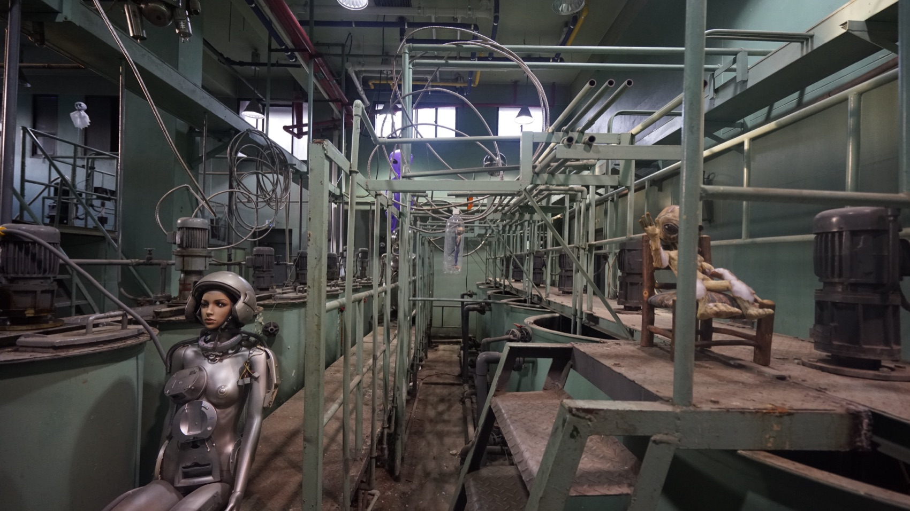
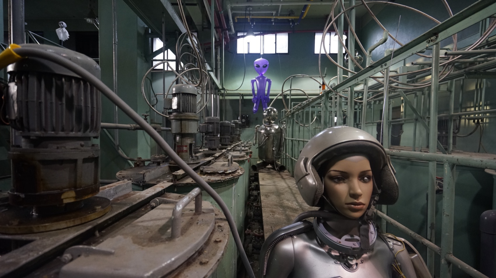
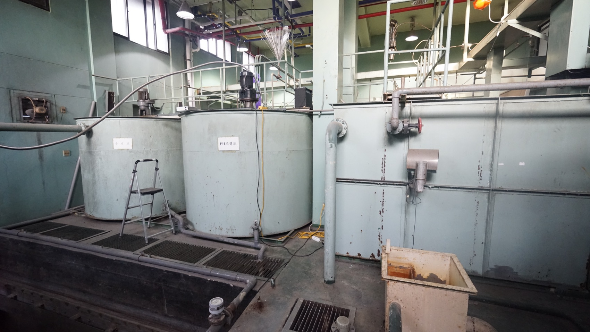
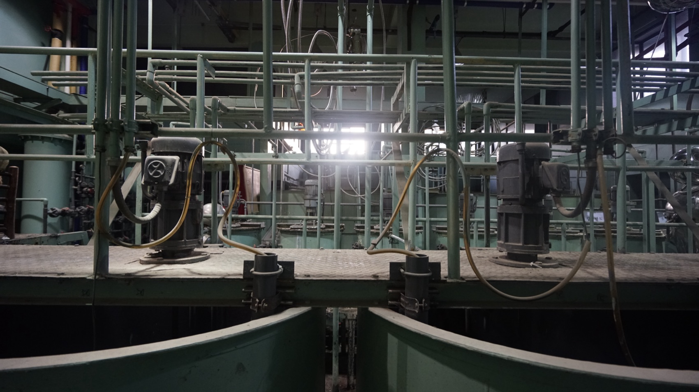
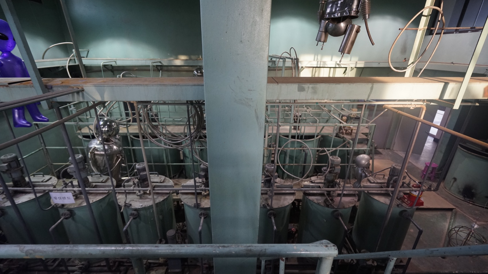
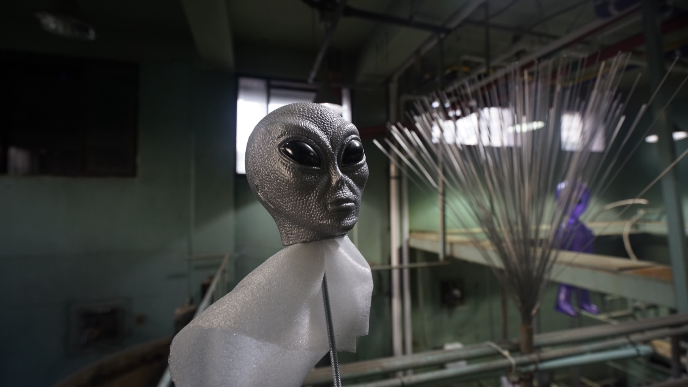
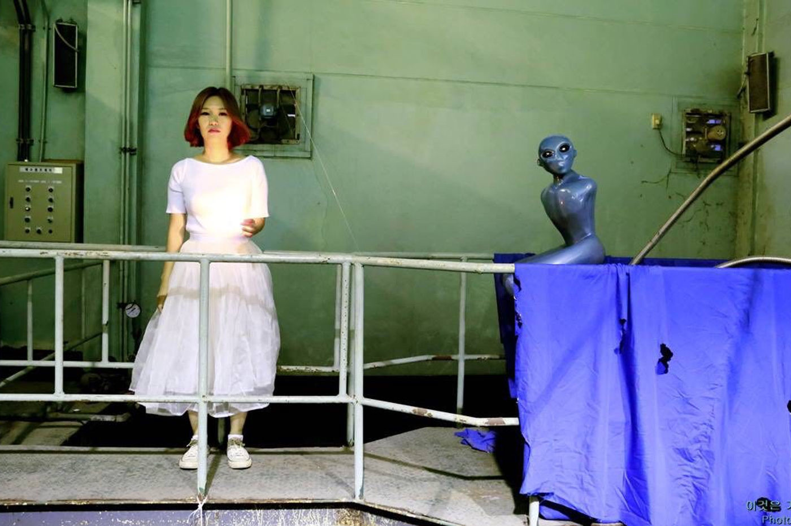
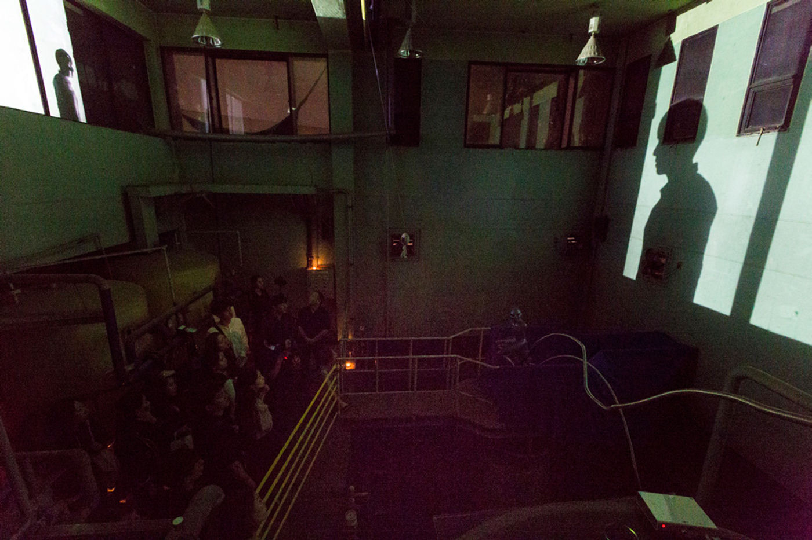
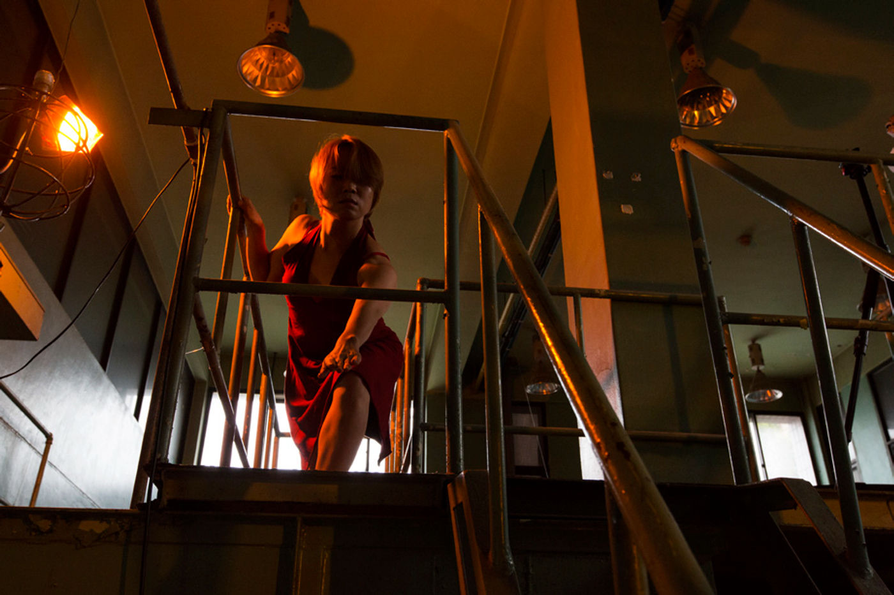
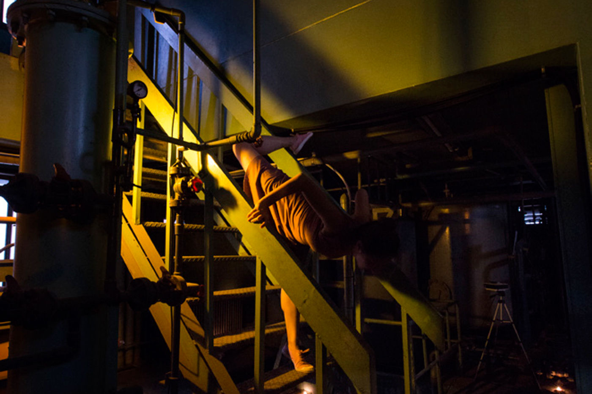

Performance — 2016
GRIDA — Episode Ⅲ Steel이것은 기술이 아니다 · This is not technology
폐수처리장의 ‘오래된 작동법’을 컨셉으로, 퍼포머가 도슨트가 되어 관객과 함께 공간의 이미지와 소리로 새로운 의미의 그물망을 짓는다.
Taking the ‘old way of operating’ of a wastewater plant as its concept, performers become docents who weave a new web of meaning from the space’s images and sounds, together with the audience.
‘GRIDA Episode Ⅲ Steel’은 미디어아트 그룹 M의 GRIDA 연작 세 번째 프로젝트로, 문 닫은 구 하수(폐수)처리장의 ‘오래된 작동법’을 컨셉으로 삼은 비정형 미디어 퍼포먼스입니다. 퍼포머들은 작가적 신체언어를 통해 폐수처리장과 만나고, 공간의 이미지와 소리를 탐색하며 관객을 안내하는 도슨트가 되어, 관객과 함께 새로운 의미의 그물망을 형성해 갑니다.
버려진 기계들 사이에는 설치작품들이 이곳의 ‘오래된 주인’처럼 곳곳에 배치되어 있고, 퍼포머는 그것들과 교감하며 관객을 이끕니다. 이들은 뜻을 알 수 없는 지브리시어(gibberish) — 무슨 말인지 알 수 없으나 무언가 말하는 듯한 소리 — 로 작품과 공간을 설명하고, 관객과 직접 소통합니다. 장면과 장면 사이에는 숟가락으로 기계를 두드리는 쇳소리(Steel)가 사방에서 울리며 다음 장면을 불러냅니다. 후레시 불빛은 2층 기계실 창과 최종정화조의 거친 벽면에 퍼포머의 그림자를 투영하고, 핸드폰 카메라가 공간의 구석구석과 퍼포머의 움직임을 실시간으로 비춥니다.
‘GRIDA Episode Ⅲ Steel’ is the third project in the media-art group M’s GRIDA series — an atypical media performance built on the ‘old way of operating’ of a shuttered former sewage/wastewater treatment plant. Through authorial body language the performers meet the plant, exploring its images and sounds and becoming docents who guide the audience, weaving a new web of meaning together. Among the abandoned machines, installation works are placed like the space’s ‘old owners,’ and the performers commune with them as they lead the audience. They describe the works and the space in gibberish — sounds one cannot parse yet that seem to mean something — and communicate with the audience directly. Between scenes, the ring of steel struck with spoons fills the space from every direction, summoning the next scene. Flashlights cast the performers’ shadows onto the second-floor machine-room windows and the rough walls of the final purification tank, while phone cameras light the corners of the space and the performers’ movements in real time.
- 연출
- Direction
- Kim Jae Min (김제민) · M
- 사운드
- Sound
- Jin Sang-tae (진상태)
- 방법
- Method
- 신체언어 · 지브리시어 · 쇳소리 · 그림자 투영 · 핸드폰 실시간 영상
- Body language · gibberish · steel sounds · shadow projection · live phone video
- 키워드
- Keywords
- site-specific · docent performance · non-linear · sound & installation
구성 — 오래된 작동을 되짚는 장면들
Structure — Scenes Retracing an Old Operation
폐수처리장을 다시 가동하다
Restarting the wastewater plant
00
도입 (Intro)
Intro
처리장 문을 두드리면 퍼포머가 나와 관객을 맞이하고 주의사항을 일러준 뒤, 지브리시어를 하며 철문 안으로 관객을 데리고 들어간다.
A knock at the plant door; a performer emerges, greets the audience and gives cautions, then leads them through the iron door in gibberish.
01
폐수처리장의 그림자
Shadow of the Plant
최종정화조 벽면과 2층 기계실 창에 퍼포머의 그림자가 손끝에서 온몸으로 번져간다.
♪ John Cage — Dream (1948)
On the tank walls and machine-room windows, a performer’s shadow spreads from fingertips to the whole body.
♪ John Cage — Dream (1948)
02
오래된 작동 Ⅰ
Old Operation Ⅰ
일상적 움직임을 공간에 맞춰 되풀이하며 기계의 ‘오래된 작동’을 몸으로 재연한다. 지브리시어로 관객과 접촉한다.
Everyday movements, tuned to the space, re-enact the machines’ ‘old operation’ with the body; contact with the audience through gibberish.
03
폐수처리장으로의 접속
Connecting to the Plant
퍼포머가 최종정화조의 설치작품과 교감하고, 핸드폰 영상이 그를 좇는다. 움직임이 무르익으면 사방에서 쇳소리가 인다.
♪ Morton Feldman — Three Voices
A performer communes with the tank’s installation as phone video follows; as the movement ripens, steel rings out from every side.
♪ Morton Feldman — Three Voices
04
오래된 작동 Ⅱ
Old Operation Ⅱ
퍼포머들이 각자의 자리에서 조명을 켜고 움직임과 핸드폰 영상을 이어가다 서로 자리를 바꾼다. 마침내 철문이 열린다.
♪ Terry Riley — In C · Simeon ten Holt — Palimpsest
Each performer lights their station, continuing movement and phone video before trading places. At last, the iron door opens.
♪ Terry Riley — In C · Simeon ten Holt — Palimpsest
장면과 장면 사이 — Bridge. 숟가락으로 기계를 두드리는 쇳소리가 공간을 가득 채우며 다음 장면으로 건너간다.
Between the scenes — Bridge. The ring of steel struck with spoons fills the space and crosses into the next scene.
폐수처리장, 그리고 오래된 주인들 — 서울혁신파크, 2016
The plant, and its old owners — Seoul Innovation Park, 2016





퍼포먼스 — 서울혁신파크, 2016
Performance — Seoul Innovation Park, 2016



